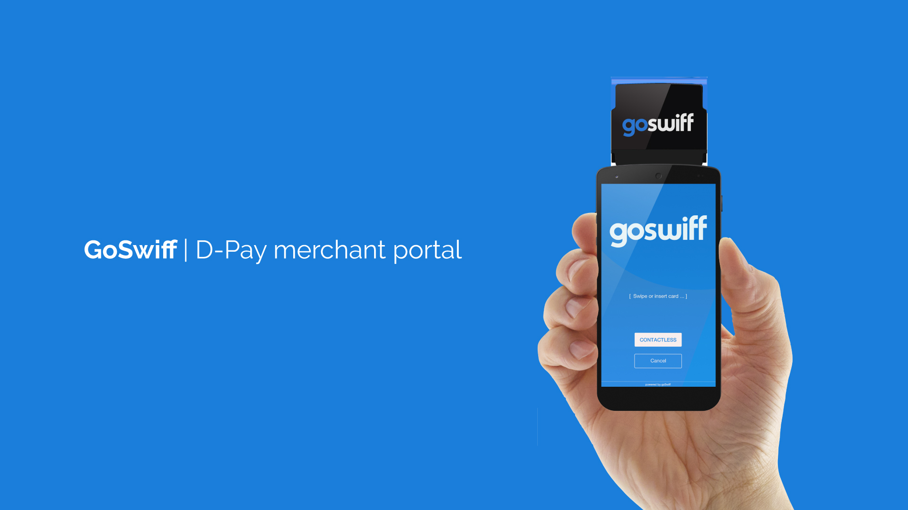
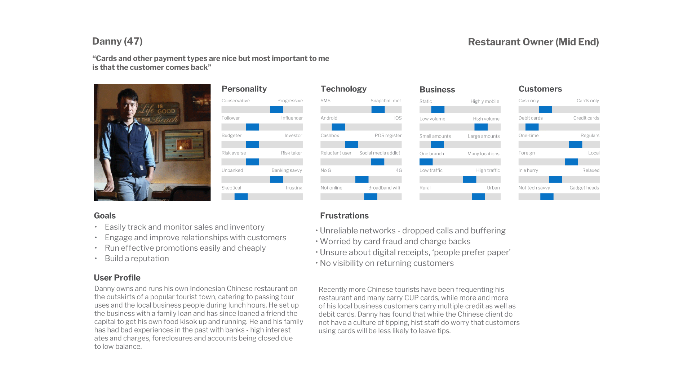
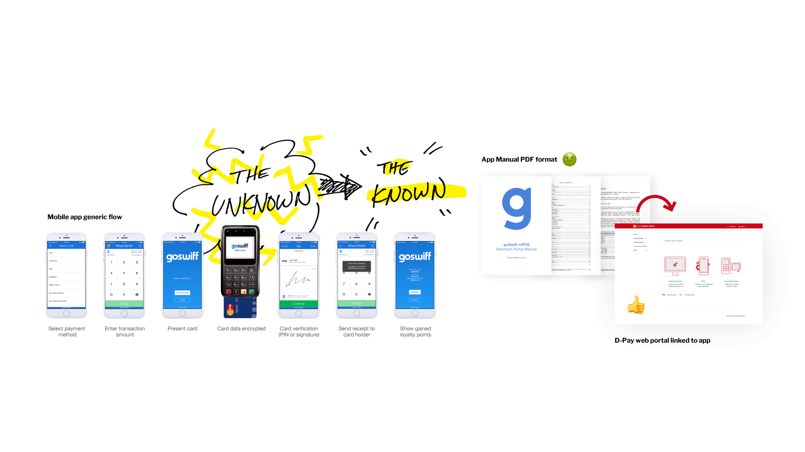
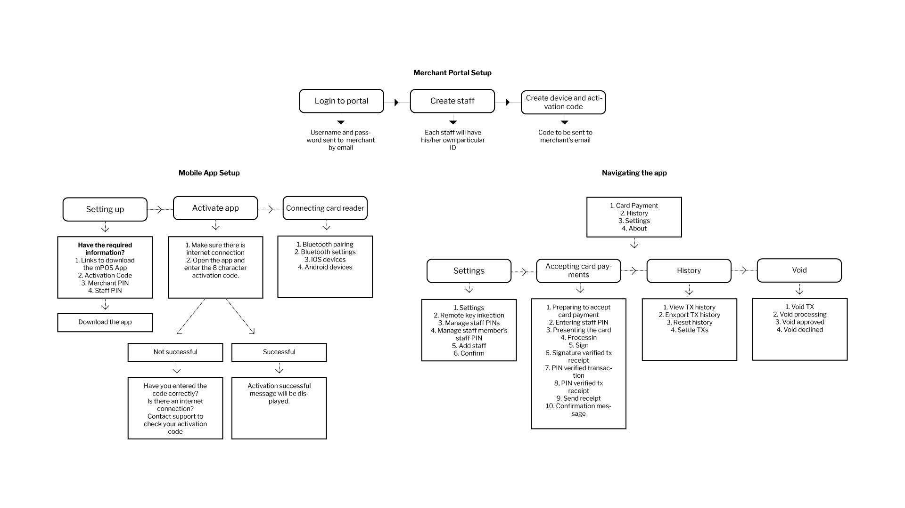
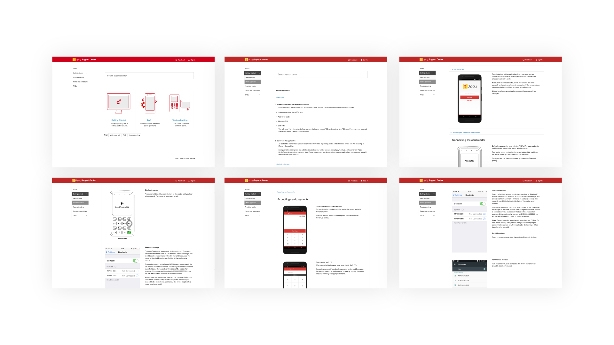
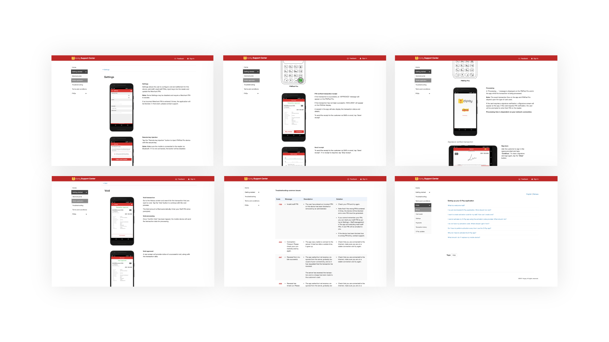
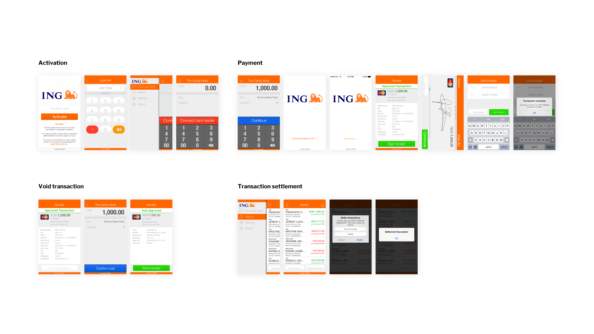

Merchant Portal
Overview
GoSwiff provides a white-label mobile payment application, enabling merchants of all sizes to accept digital payments – mobile and in-store.
The mobile application together with mobile point of sale (mPOS) card reader allowed for fast, ‘easy’ and secure card transactions anywhere, anytime. The technology enables mobile devices combined with card readers to create an affordable and easy to integrate mobile payment solution.

The challenge
In order for the system to work, an integration between software (mobile device) and hardware (pinpad) had to exist. We noticed that around 32% of users were unable to activate the application to start accepting payments.
A problem that stood out during usability testing was the difficulty that some merchants had in connecting the software (application) with the hardware (pinpad/dongle). The digital onboarding is a key factor for a successful merchant activation journey so this was a pain point in the process that had not been properly addressed.
Problem: Activation
Before the app can be used with the card reader, the mobile device needs to be paired with the reader. This is often a problem faced by payment solutions that need to integrate software with hardware.
We noticed that 32% of the merchants that had downloaded the app were unable to activate the application and start accepting payment
This problem was also quite evident during usability testing as we noticed that 29% of users had difficulty with the activation process, particularly with pairing/connecting the software (application) with the hardware (PIN pad/dongle) via bluetooth.
Solution: A web portal and support center linked to app
Solution: Support center linked to app
The digital onboarding and successful activation are key factors for a positive merchant experience and ultimately the succes of the application so this was a big problem indeed. The process is somewhat complex and setup can be hard for merchants without the right support or guide. Merchants had to download a quite comprehensive PDF manual to help them through the different activation steps.
Although there were a few in app solutions that could be implemented (such as more tooltips or visual step by step guides), we were about to launch the service in Indonesia in partnership with Indosat (D-Pay). Due to time constrains, we opted to create a web portal that would work as a quick reference guide for merchants. The portal could be accessed from the application help menu.
Activation and app basic flow
Web portal screens
Web portal worked as a quick reference guide for merchants that had difficulties activating the app or with hardware integration. The portal could be accessed from the application help menu.
 Web portal content sections
App training prototype
As part of this project a fully functioning training/demo app was also created to be used internally by all GoSwiff employees and also to be used in marketing events and sales meetings.
Outcomes & lessons learned
We noticed a 22% activation rate increase within 2 weeks. Although this was a temporary measure I believe it helped considerably in making the process easier to understand and most importantly the acces to valuable information needed for a successful activation.
It is always hard when users need to leave the application to perform other/associated tasks (such as dealing with bluetooth pairing problems). This is one of the main issues faced by GoSwiff and other companies with similar solutions that require these types of integrations.